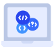
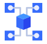

COYOTE
Automated SW Testing Tool
Fully automated! Better coverage! Fexible setting!
COYOTE is a dynamic verification tool developed to
maximize user convenience.
Coyote c++ Download
Combining symbolic testing technology with machine learning technology, this revolutionary, fully automated white box testing tool delivers an amazing experience to users.
COYOTE is a fully automated unit testing tool that completely performs the whole process of unit testing from test case creation to execution to analysis of result with one click. If you get introduced COYOTE, you can improve so much on a testing engineer’s productivity by 3 to 6 times and minimize testing cost and labor.
Main Features
-

The ultimate automation of unit test
-

Fully automated creation of test cases
-

Fully automated tool for embedded SW white box testing
-
Full automation by one click
-
100% fully automated test driver code
-
100% fully automated test stub code
-
Achieve more than 90% code coverages
Why COYOTE?
Reducing SW testing costs that have been increased up to 40% to 60% of total development cost, and incresing client satisfaction
Reducing development of time by automatically creating test cases and test harnesses at high speed
Securing systematic and meaningful test cases, maximizing test effects for achieving reliability.
Eatablishing a systematic test process and improving the QA process by the automatizing unit test